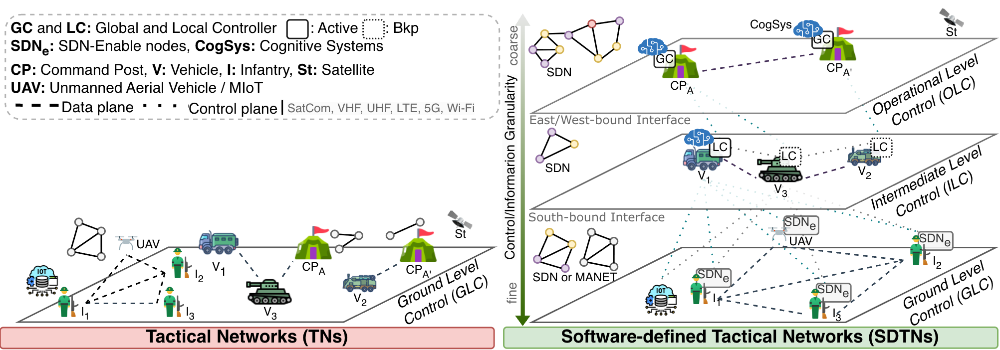
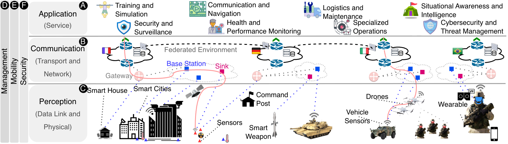
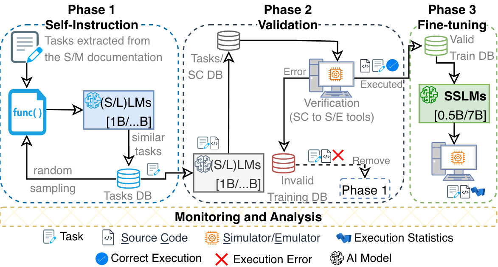

Casos de Uso e Portfólio
Demonstrações práticas da nossa capacidade de desenvolver soluções inteligentes e resilientes

Mobilidade Urbana e Tática
Modelagem e predição de padrões de mobilidade em ambientes urbanos e táticos utilizando dados espaço-temporais e semânticos. Nossas soluções permitem antecipar movimentos, otimizar rotas e melhorar a resiliência de sistemas de transporte e operações críticas em cenários dinâmicos.

Redes Táticas Definidas por Software (SDTN)
Arquiteturas hierárquicas de controle para redes táticas utilizando o paradigma SDN (Software-Defined Networking). A solução permite gerenciamento dinâmico em múltiplos níveis (Global, Local e Operacional), garantindo resiliência, adaptabilidade e eficiência em ambientes de comunicação hostis e intermitentes.

Internet das Coisas em Ambientes Críticos (IoMT)
Integração de dispositivos IoT em cenários críticos através de uma arquitetura em camadas (Percepção, Comunicação e Aplicação). O modelo suporta desde sensores veiculares e drones até sistemas de comando, focando em interoperabilidade, segurança em ambientes federados e consciência situacional avançada.

Treinamento e Fine-Tuning de LLMs para Redes (GeNetE)
Desenvolvimento do framework GeNetE (Generative Network Environments) para especialização de Small Language Models (SLMs). A metodologia envolve três fases: Auto-instrução para extração de tarefas, Validação via emuladores de rede e Fine-tuning final. O resultado é um modelo especializado capaz de gerar configurações e gerenciar redes complexas com alta precisão.